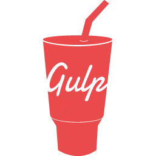
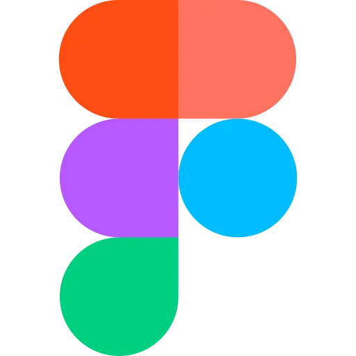

Back
to
top
About me
What I do
I have participated in project development of various complexity on different CMS/Frameworks, such as: Wordpress, Opencart, Yii2, Laravel. Have an understanding of OOP principles. Good front-end development skills. I usually make Full Responsive Web Sites for clients. Worked with Git. I have shallow knowledge of PHP.
Reasons to hire me
— Easy to read and SEO-friendly HTML-markup;
— Cross-browser and high-performance;
— Speed optimization;
— Quality Adaptive layout;
— QA. A solid understanding of browser debugging;
— Website Deploy
— Friendly;
— Good organization and work ethic;
Skilled in:
- — HTML5, CSS3, SCSS, SASS;
— JavaScript (ES6+), jQuery;
— AJAX, JSON;
— PHP, MySQL;
— Gulp project builder;
— Bootstrap 3,4,5;
— Figma/Photoshop/Zeplin/Adobe XD to HTML;
My tools
HTML5
HTML is the foundation of a good website. I make use of HTML semantics to improve screen-reader accessibility and SEO. I always make sure my markup is W3C validated.
CSS3
I use a component approach to web development. It is based on the principle of dividing the interface into independent blocks. It allows you to easily and quickly develop interfaces of any complexity and reuse existing code, avoiding «Copy-Paste».
JavaScript
JS is the language of many quirks, time and my experience helped me understand its mechanics. Also, I use jQuery, with a functional approach, to deliver demanding frontend solutions.
- 


- 